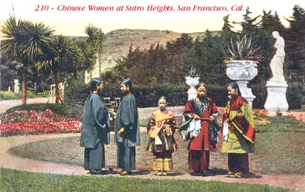
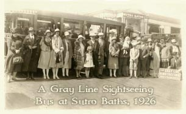

Chinese Women at Sutro Heights, San Francisco, California
Sutro Baths & Sutro Heights
The Map
 A Modern Map Showing the Ocean
Beach Area
A Modern Map Showing the Ocean
Beach Area
Find Playland (site), Cliff House (with the Musee Mecanique and Camera
Obscura), Sutro Baths (ruins), Sutro Heights, Windmills and the Beach Chalet in Golden Gate Park,
Mile Rock Light House, and Fort Point under the Golden Gate Bridge.
Sutro Baths

Sutro Baths and the
Cliff House, ca 1910
Inside Sutro Baths, ca 1910
More Tourists at Sutro Baths, 1920s
Sutro Heights
Palm Avenue, Sutro
Heights, 1909
Palm Avenue, Sutro
Heights, ca 1910
The Parapet, Sutro
Heights
The Parapet, Sutro
Heights
The Parapet and Observatory, Sutro
Heights, ca 1916

Click Here

Click Here

Click Here
Amusement Parks WebMaster
Last Updated

Support Free-access Online History and Genealogy.
Join Us!